How process files in a folder#
In this notebook we will program a loop which walks over a folder of images. Furthermore, the loop will call a python function that analyses the images one by one. Hence, we will process all images in that folder using the same procedure.
See also
import os
from skimage.io import imread
import numpy as np
import matplotlib.pyplot as plt
from stackview import imshow
For demonstration purposes, we reuse a folder of images showing banana-slices imaged using magnetic resonance imaging (Courtesy of Nasreddin Abolmaali, OncoRay, TU Dresden)
# define the location of the folder to go through
directory = 'data/banana/'
# get a list of files in that folder
file_list = os.listdir(directory)
file_list
['banana0002.tif',
'banana0003.tif',
'banana0004.tif',
'banana0005.tif',
'banana0006.tif',
'banana0007.tif',
'banana0008.tif',
'banana0009.tif',
'banana0010.tif',
'banana0011.tif',
'banana0012.tif',
'banana0013.tif',
'banana0014.tif',
'banana0015.tif',
'banana0016.tif',
'banana0017.tif',
'banana0018.tif',
'banana0019.tif',
'banana0020.tif',
'banana0021.tif',
'banana0022.tif',
'banana0023.tif',
'banana0024.tif',
'banana0025.tif',
'banana0026.tif',
'image_source.txt']
Obviously, there are not just images in that folder. We can filter that list with a short for-statement:
image_file_list = [file for file in file_list if file.endswith(".tif")]
image_file_list
['banana0002.tif',
'banana0003.tif',
'banana0004.tif',
'banana0005.tif',
'banana0006.tif',
'banana0007.tif',
'banana0008.tif',
'banana0009.tif',
'banana0010.tif',
'banana0011.tif',
'banana0012.tif',
'banana0013.tif',
'banana0014.tif',
'banana0015.tif',
'banana0016.tif',
'banana0017.tif',
'banana0018.tif',
'banana0019.tif',
'banana0020.tif',
'banana0021.tif',
'banana0022.tif',
'banana0023.tif',
'banana0024.tif',
'banana0025.tif',
'banana0026.tif']
Alternatively, we can also write a longer for-loop and check if files are images. This code does exactly the same, it is just written in a different way.
# go through all files in the folder
for file in file_list:
# if the filename is of a tif-image, print it out
if file.endswith(".tif"):
print(file)
banana0002.tif
banana0003.tif
banana0004.tif
banana0005.tif
banana0006.tif
banana0007.tif
banana0008.tif
banana0009.tif
banana0010.tif
banana0011.tif
banana0012.tif
banana0013.tif
banana0014.tif
banana0015.tif
banana0016.tif
banana0017.tif
banana0018.tif
banana0019.tif
banana0020.tif
banana0021.tif
banana0022.tif
banana0023.tif
banana0024.tif
banana0025.tif
banana0026.tif
As you can see above image_file_list is a list of strings. Storing the name of the image in a list means way less computational power than storing the images themselves in the list. It makes sense to imread the images at the latest possible point in time, here in the for-loop below. If you are interested in folder structures and specifying these directories, you can check out these two jupyter notebooks here and here.
In order to show all images, we need to open them from the correct directory:
# go through all files in the folder
for image_file in image_file_list:
image = imread(directory + image_file)
imshow(image)
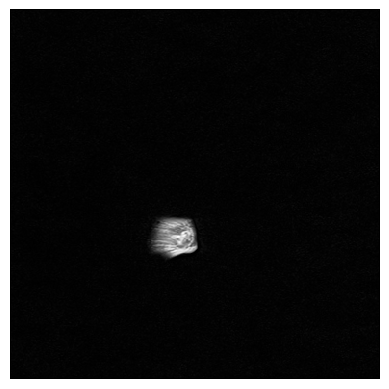
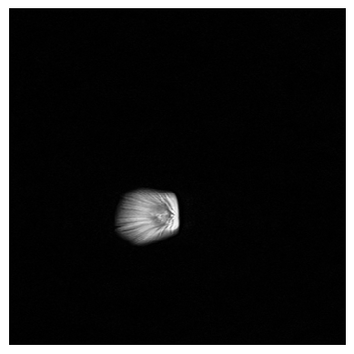
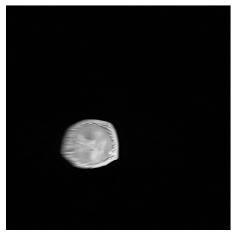
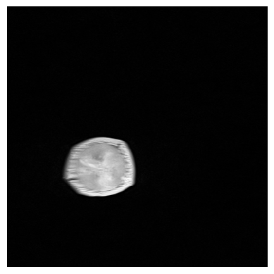
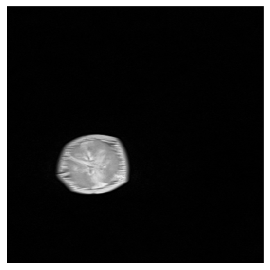
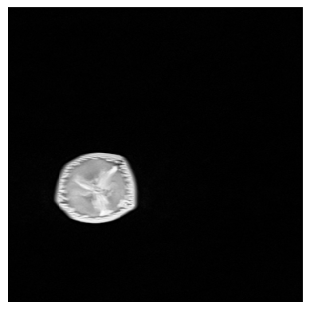
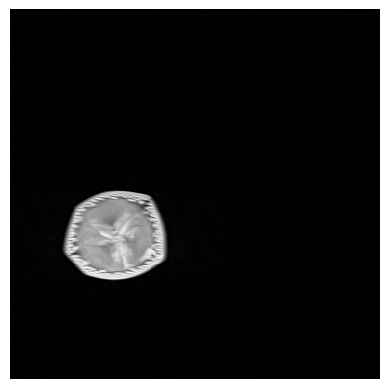
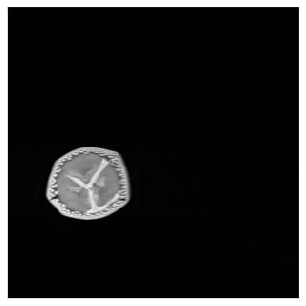
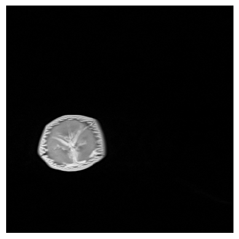
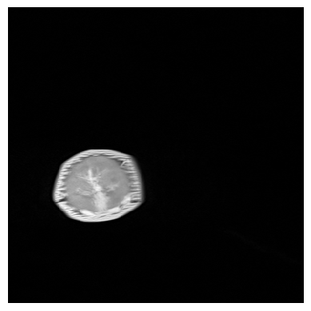
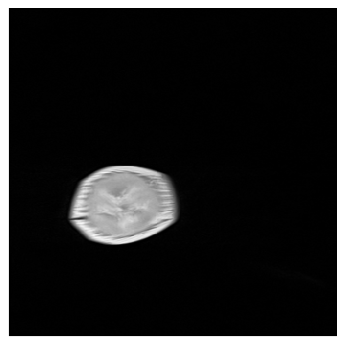
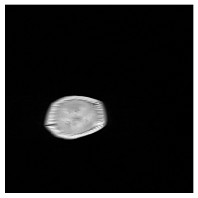
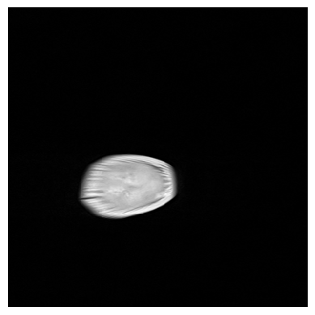
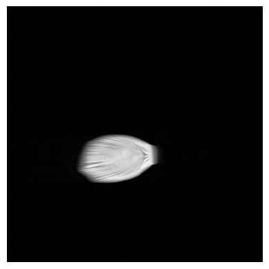
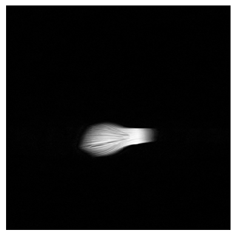
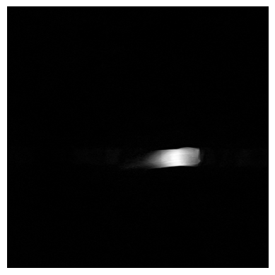
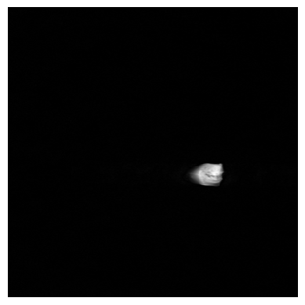
Custom functions help us to keep code organized. For example, we can put image-analysis code in a function and then just call it:
def load_and_measure(filename):
"""
This function opens an image and returns its mean intensity.
"""
image = imread(filename)
# return mean intensity in the image
return np.mean(image)
# for testing
load_and_measure(directory + "banana0010.tif")
np.float64(69.15106201171875)
With such a custom function, we can also make use of the short form for writing for-loops:
mean_intensities_of_all_images = [load_and_measure(directory + file) for file in image_file_list]
mean_intensities_of_all_images
[np.float64(12.94198947482639),
np.float64(25.04678683810764),
np.float64(39.627543131510414),
np.float64(49.71319580078125),
np.float64(56.322109646267364),
np.float64(60.08679877387153),
np.float64(63.94538031684028),
np.float64(66.04618326822917),
np.float64(69.15106201171875),
np.float64(70.85603162977431),
np.float64(74.40909152560764),
np.float64(77.48423936631944),
np.float64(81.77360026041667),
np.float64(85.44072129991319),
np.float64(91.22532823350694),
np.float64(94.36199951171875),
np.float64(98.47229682074652),
np.float64(99.3980712890625),
np.float64(102.34300401475694),
np.float64(101.50947401258681),
np.float64(97.14067247178819),
np.float64(80.13118489583333),
np.float64(49.77497694227431),
np.float64(28.36090766059028),
np.float64(18.806070963541668)]
plt.plot(mean_intensities_of_all_images, marker='o')
plt.xlabel("Image Index")
plt.ylabel("Mean Intensity")
plt.title("Mean Intensities of All Images")
plt.show()
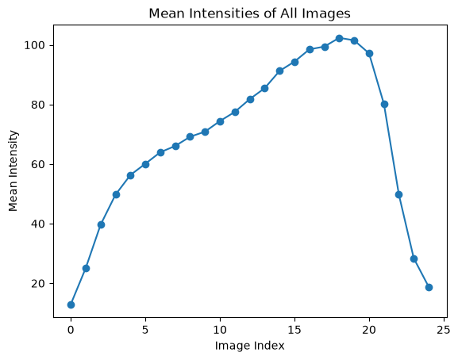
Exercise#
Open all images of the banana dataset, segment the images and measure the centroid of the banana slices to a table. Write measurement results to “banana.csv”.
Hint: Instead of the imshow command in the last example, execute your image processing workflow. Setup the image processing workflow first, e.g. in a custom function. Programm iterating over files in a folder last, after the image processing works.